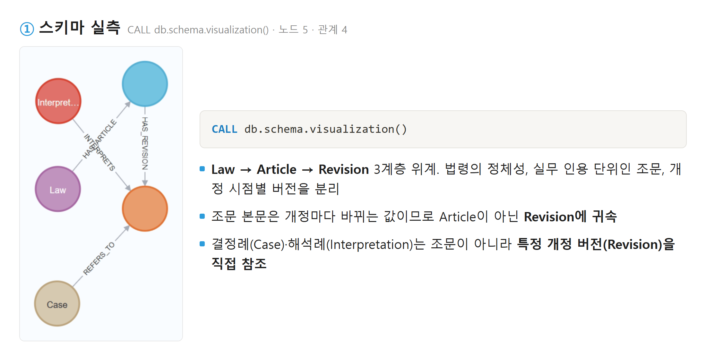
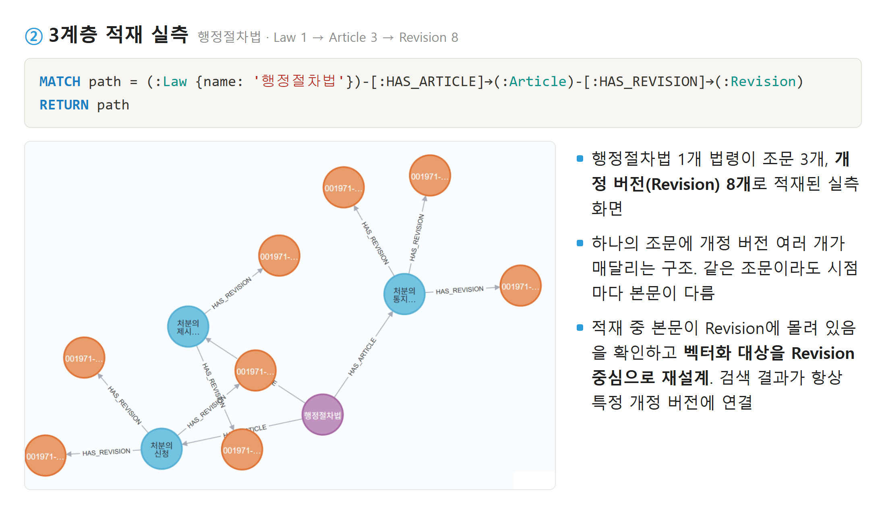
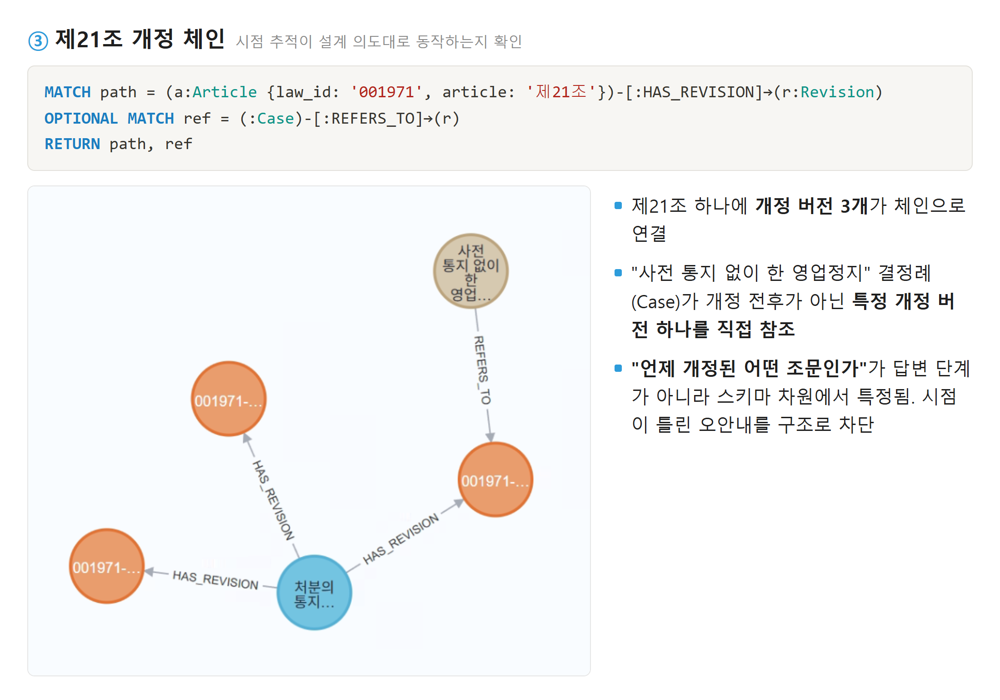
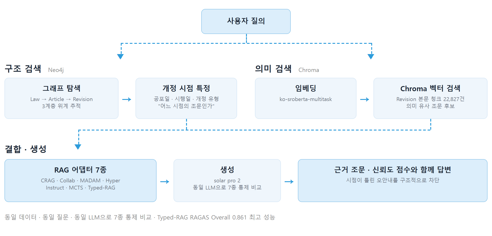
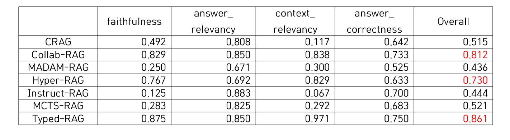
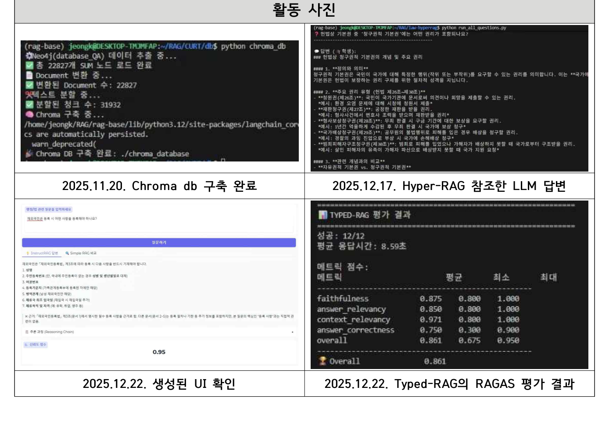

"언제 개정된 어떤 조문인가"를 추적하는 그래프 + 벡터 이중 DB 챗봇.
최신 RAG 기법 7종을 동일 조건에서 통제 비교, Typed-RAG RAGAS Overall 0.861
대학원생 멘토로 아키텍처 설계와 핵심 구현 주도, 학부연구생 연구 지도
문제 정의
- 기존 무료 법률·행정 챗봇(법률똑똑이, 서울톡)은 서비스 범위가 제한적이고 법령 개정 이력과 답변 근거가 불투명해 신뢰도에 한계
- 법령 안내에서 가장 위험한 오답은 내용이 아니라 시점이 틀린 답. 개정 전 조문으로 안내하면 재처리와 이의제기로 되돌아옴
- 목표는 단순 요약·답변 생성이 아니라 근거 문서의 명시적 인용과 신뢰성 확보
시스템 설계
| 검토안 | 내용 | 판단 |
|---|---|---|
| 1안. 벡터 DB 단독 | 자연어 질의의 의미 검색에 강점 | 기각. 법령·조문·개정 이력 간 구조 관계와 시점 추적 불가 |
| 2안. 그래프 DB 단독 | 구조 관계 탐색에 강점 | 기각. 자연어 질의를 의미 기반으로 매칭하기 어려움 |
| 3안. 그래프 + 벡터 이중 DB (채택) | Neo4j가 구조·시점을, Chroma가 의미 검색을 분담 | 채택. "어느 시점의 조문인가"를 스키마 차원에서 특정 |
- 3계층 스키마 설계: Law는 법령의 정체성, Article은 법률 실무에서 실제로 인용하는 단위인 조문, Revision은 개정 시점별 버전(공포일·시행일·개정 유형·본문). 본문은 개정마다 바뀌는 값이므로 조문이 아닌 Revision에 귀속
- 데이터 구축: AIHub 행정법 6종(결정례·법령·해석례 QA, 결정례·판결문·해석례 요약)을 시행일·공포일·개정 이력 연결 정보까지 보존해 jsonl로 정제. 국가법령정보 API로 행정 실무 인용 빈도가 높은 법령 10종을 수집(헌법, 행정절차법, 개인정보보호법 등)해 그래프 DB Neo4j에 Law–Article–Revision 3계층 지식그래프로 적재
- Neo4j 적재 과정에서 조문 본문이 대부분 Revision 노드에 존재함을 확인하고 벡터화 대상을 Revision 중심으로 재설계. 그래프 DB의 검색 결과가 항상 특정 개정 버전에 연결되어 시점 추적이 강화됨



파이프라인

- 최신 arXiv 기법 후보 12종 중 유료 API 의존과 환경 구성 불가 5종을 제외하고, 서로 다른 검색 전략을 대표하도록 7종을 확정. 제외 사유는 보고서에 기록
- 기법마다 DB 사용 방식이 달라 그대로 붙이면 비교가 불공정해지므로, 공통 DB 위에 기법별 어댑터를 두어 검색 백엔드는 동일하고 전략만 달라지도록 변인 통제. 긴 조문은 TextSplitter로 분할해 임베딩 의미 약화를 방지하고 Chroma에 22,827건 적재
| 기법 | 전략 | 어댑터 구현 |
|---|---|---|
| CRAG | 답변 자기검증 | 응답을 정답, 환각, 근거 부족으로 분류 |
| Collab-RAG | 질문 분해 | 소형 모델로 하위 질문 생성 후 개별 검색 |
| MADAM-RAG | 다중 에이전트 토론 | 문서별 에이전트가 주장을 생성해 충돌 여부 비교 |
| Hyper-RAG | 그래프 확장 | Chroma로 핵심 조문을 찾고 Neo4j로 관련 조문과 개정 확장 |
| Instruct-RAG | 근거 정제 | 검색 문서에서 핵심 문장과 정리 과정을 생성 |
| MCTS-RAG | 추론 경로 탐색 | 첫 검색 후 여러 추론 경로를 탐색해 최적 경로 선택 |
| Typed-RAG | 질문 유형 분류 | 질문을 유형별로 분류해 그에 맞는 검색 방식으로 자동 전환 |
평가 설계
- RAGAS 프레임워크로 faithfulness · answer relevancy · context relevancy · answer correctness 4개 지표 측정
- 사용자 유형 6종(일반 국민 · 정책 담당자 · 법률 실무자 · 연구자 · 언론 · 학생)별 질문 12개를 설계해 유형별 최적 기법 식별
- 동일 데이터 · 동일 질문 · 동일 LLM(solar pro 2)으로 7종 기법을 통제 비교
결과

- Typed-RAG Overall 0.861 최고 성능. 법·행정 질문에 비교·분석형 비사실적 질문이 많아 질문 유형 분류 + 분해 전략이 유리했다고 해석
- 지표 분해로 Instruct-RAG의 극단적 불균형 포착: answer relevancy 0.883(최상위권) vs faithfulness 0.125(최저). 그럴듯한 답과 근거 있는 답은 다르다는 것을 정량 확인, 단일 지표만 봤다면 놓쳤을 결론
- 사용자 유형별 최적 기법: 일반 국민 MADAM·MCTS, 정책 담당자 Collab·Instruct, 연구자 CRAG, 학생 Typed. 법률 실무자·언론은 우세 기법 없음(충돌 근거·기사 자료가 DB에 부족한 한계로 명시)
- 답변에 근거 조문과 신뢰도 점수를 함께 표시해, 담당자가 조문을 일일이 찾아 확인하던 검증 과정을 단축하는 구조. 3계층 스키마가 시점이 틀린 오안내를 예방
- 역할 분담: 아키텍처 설계와 실험 프레임, 결과 해석은 멘토가 주도하고 기법별 구현과 실험 실행은 학부연구생이 담당. 막힐 때 답을 주는 대신 다음에 확인할 지점을 좁혀주는 방식으로 지도
